GUIDE — 使い方
見積書の使い方──料金マスタの登録から承諾書の署名・成約の記録まで
「歯科サブカルテ&コンサルくん」の見積書の作り方を、実際の画面で順に説明します。最初に医院の料金を一度入れておけば、あとは歯を選んで治療を足すだけで、歯式の図が入った見積書になります。
この記事の画面は iPad 版で、患者さんは架空の「サンプル見積」さん、担当者も架空の名前です。料金は、筆者の医院の自費の料金表を使っています。
- 最初に料金マスタへ医院の料金を入れる。ブリッジは支台とポンティックの単価を別々に持てる
- 見積書は歯を選ぶ → 料金表から治療を選ぶだけ。値引きは金額でも％でも入れられる
- インプラントとブリッジのように、比べたい案を最大3つまで並べられる。患者さんへの比較表示は保存しなくても出せる
- 保存した見積書から見積承諾書を作り、患者さんに署名してもらうと、その案が自動で「成約」として記録される
- 「見積もりの状況」で未確定の見積もりを追い、「実績」で成約率と金額を治療別・担当者別に見られる
STEP 1料金マスタに医院の料金を入れる
最初に一度だけ、医院の自費の料金を「料金マスタ」に入れておきます。
- ホームの 見積書 を押し、右上の 料金マスタ を押します。
- いちばん上の 税表示モード を選びます。税込 は登録した金額をそのまま使い、税抜 は見積書で消費税（10％）を足して表示します。
- ＋ 項目を追加 を押し、カテゴリ・項目名・金額を入れて 保存 を押します。備考（「1本あたり」など）は任意です。
- 入っている項目を直すときは、その行を押します。同じ形の画面が開きます。
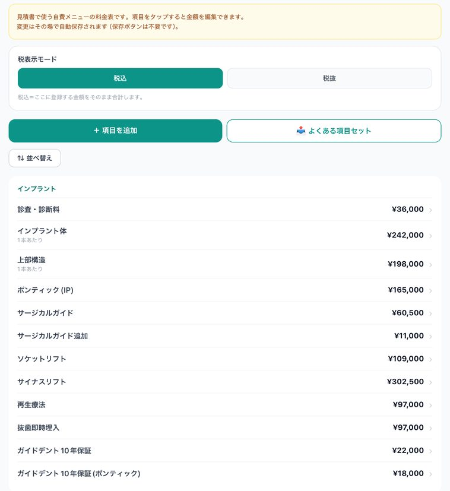
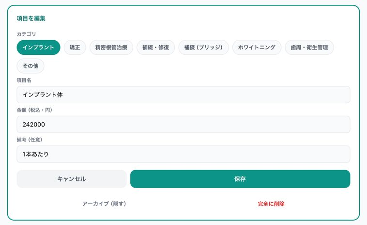
カテゴリは、「インプラント」「矯正」「精密根管治療」「補綴・修復」「補綴（ブリッジ）」「ホワイトニング」「歯周・衛生管理」「その他」の8つです。⇅ 並べ替え で、カテゴリの中の順番を変えられます。
よくある項目セット を押すと、よく使う項目がまとめて入ります。金額は空（「¥未設定」）で入るので、医院の金額を入れてから使ってください。
ブリッジは、支台とポンティックの単価を別々に入れる
カテゴリを「補綴（ブリッジ）」にすると、金額の欄が支台単価とポンティック単価の2つになります。ポンティック単価を空にすると、支台と同じ単価で計算します。
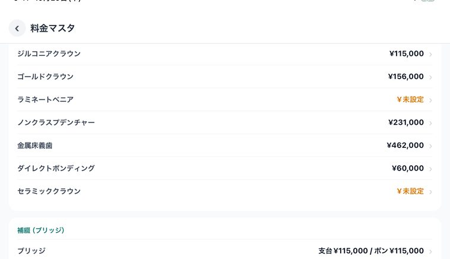
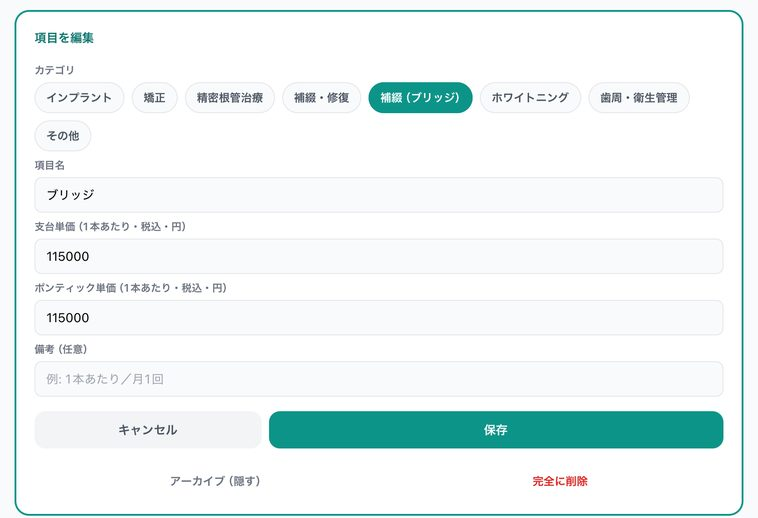
使わなくなった項目は、編集画面の アーカイブ（隠す） で一覧から隠せます。隠した項目はあとで戻せます。完全に削除 は元に戻せません。どちらを押しても、作り終えた見積書の金額は変わりません。
STEP 2見積書を作り始める
見積書の画面から、患者さんを選んで作り始めます。
- ホームの 見積書 を押します。
- 左上の ＋ 見積書を作成 を押します。
- 「患者を選択」が開くので、患者さんの名前を押します。名前や患者 ID で検索もできます。
- まだ登録していない患者さんなら、＋ 新規患者を登録 から登録します。
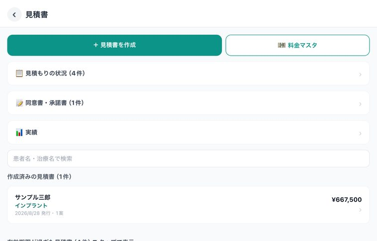
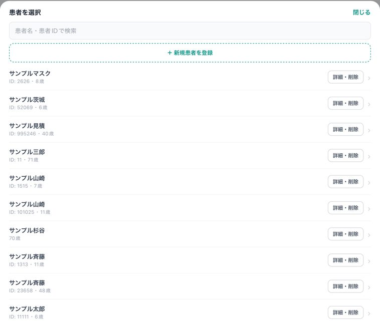
有効期限が過ぎた見積書は、一覧の下の「有効期限が過ぎた見積書」にまとまります。押すと開きます。
STEP 3治療名と有効期限を入れる
いちばん上に、見積書の題名と日付を入れます。
- 治療名を入れます（例：インプラント治療）。治療名は必須で、PDF の「治療名」の欄と、見積書の一覧に出ます。
- 発行日を確かめます。今日の日付が入っています。
- 有効期限（日数）を確かめます。最初は30日で、下に「有効期限：2026/11/28 まで」のように日付が出ます。
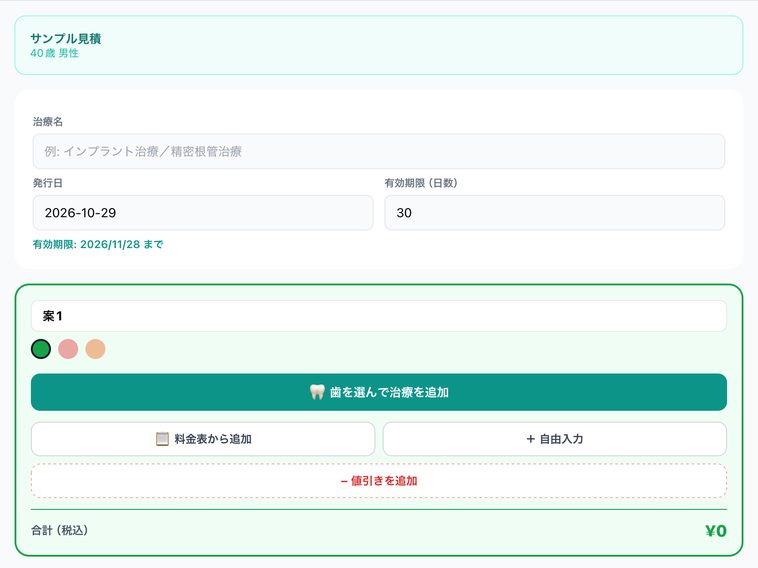
STEP 4歯を選んで、料金表から治療を足す
歯を選んでから治療を選ぶと、明細と歯式の図が一緒にできます。
- 案1の枠の 🦷 歯を選んで治療を追加 を押します。
- 歯式が出るので、治療する歯を押します（何本でも選べます）。乳歯は 乳歯 に切り替えます。
- この歯に治療を割り当てる を押します。
- 料金マスタの一覧が出るので、上のカテゴリを切り替えながら、使う治療にチェックを入れます（いくつでも選べます）。
- 選択した ○件を明細に追加 を押します。
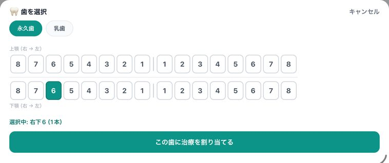
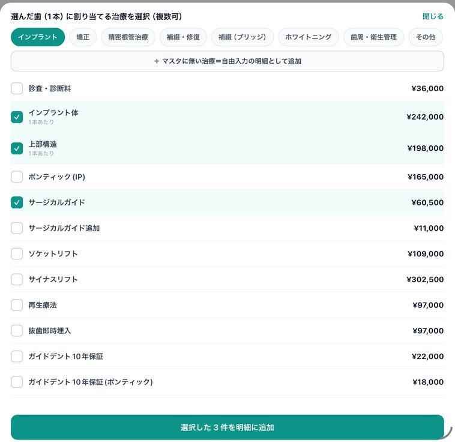
明細には、料金マスタの金額と、選んだ歯（例：右下6）が入ります。金額と数量はこの画面で直せます。直しても料金マスタの金額は変わりません。
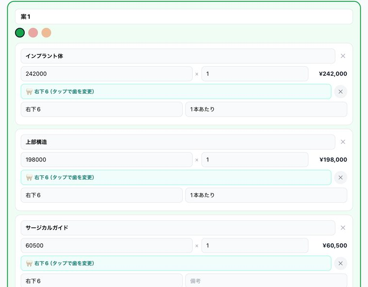
歯に結びつかない費用（診査・診断料など）は 料金表から追加 で、料金マスタに無いものは ＋ 自由入力 で足します。歯を選んだあとの一覧からも、＋ マスタに無い治療＝自由入力の明細として追加 で足せます。
「¥未設定」の項目を明細に入れたときは、金額を入れてから保存してください。金額が0円のままだと保存できません。
STEP 5値引きを入れる
値引きは、明細の1行として入れます。
- 案の枠の − 値引きを追加 を押します。
- 金額 か ％ を選び、値引きする額か割合を入れます。
- ％ のときは、割合を入れたあと %で再計算 を押します。値引きの額が決まります（あとで明細や割合を変えたときも、もう一度押します）。
- 枠のいちばん下の 合計（税込） が、値引きを引いた額に変わります。
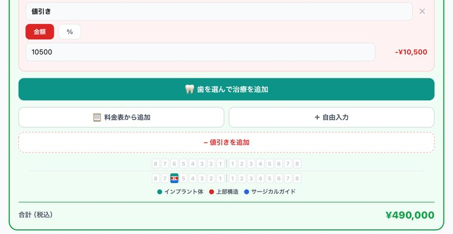
合計の上には、選んだ歯に色が付いた歯式の図が出ます。この図は、比較表示と PDF にも入ります。
STEP 6比較案を足す（例：ブリッジ）
インプラントとブリッジのように、別の治療方法を並べて見せられます。
- 案1の枠の下の ＋ 比較案を追加（最大3案） を押します。赤い枠の「案2」ができます。
- 案2でも 🦷 歯を選んで治療を追加 を押し、ブリッジにする歯（例：右下5・6・7）を選びます。
- カテゴリ 補綴（ブリッジ） から ブリッジ にチェックを入れて、明細に追加します。
- 明細に並んだ歯のうち、ポンティック（ダミー）にする歯を押します。「右下6（ポ）」のように変わり、金額がポンティック単価で計算されます。
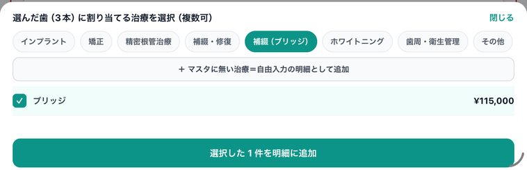
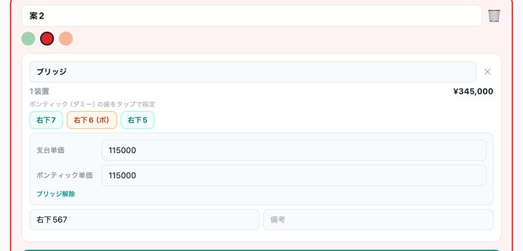
ブリッジ解除 を押すと、ブリッジとしての計算をやめて、「支台単価 × 選んだ歯の本数」の1行になります（ポンティック単価が違うときは、合計も変わります）。案は3つまで足せて、要らなくなった案は枠の右上のごみ箱で消せます。
STEP 7担当医・担当者を入れて、患者さんに見せる
見積書を出す人を入れて、患者さん向けの比較画面を開きます。
- 担当医を入れます（任意）。見積書の PDF に印字されます。
- 担当者を入れます（任意）。TC や受付の名前を入れておくと、「実績」で担当者ごとの成約率が出ます。担当者は PDF には出ません。
- 患者さんに伝えたいことがあれば、備考に入れます。
- 黒い 🖥️ 患者に見せる（比較表示） を押します。保存していなくても開けます。
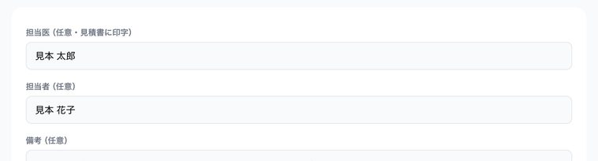
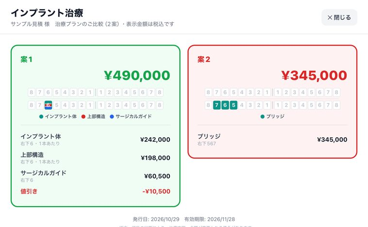
各案の合計は税込で出ます（料金マスタを「税抜」にしているときは、税抜の明細・小計と消費税も出ます）。右上の ✕ 閉じる で、もとの画面に戻ります。
STEP 8PDF を確かめて、保存する
画面のいちばん下で PDF の中身を決めて、見積書を保存します。
- 医院名を入れます。PDF の右上に出ます。
- 支払方法の注記を確かめます。最初から一文が入っていて、空にすると PDF に出ません。
- PDF の下に日付と署名の欄を付けるかどうかを、チェックで選びます。
- 🔍 プレビュー で PDF の見た目を確かめます。
- 見積書を保存 を押します。「保存完了」と出たら OK を押します。
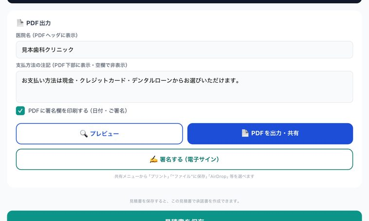
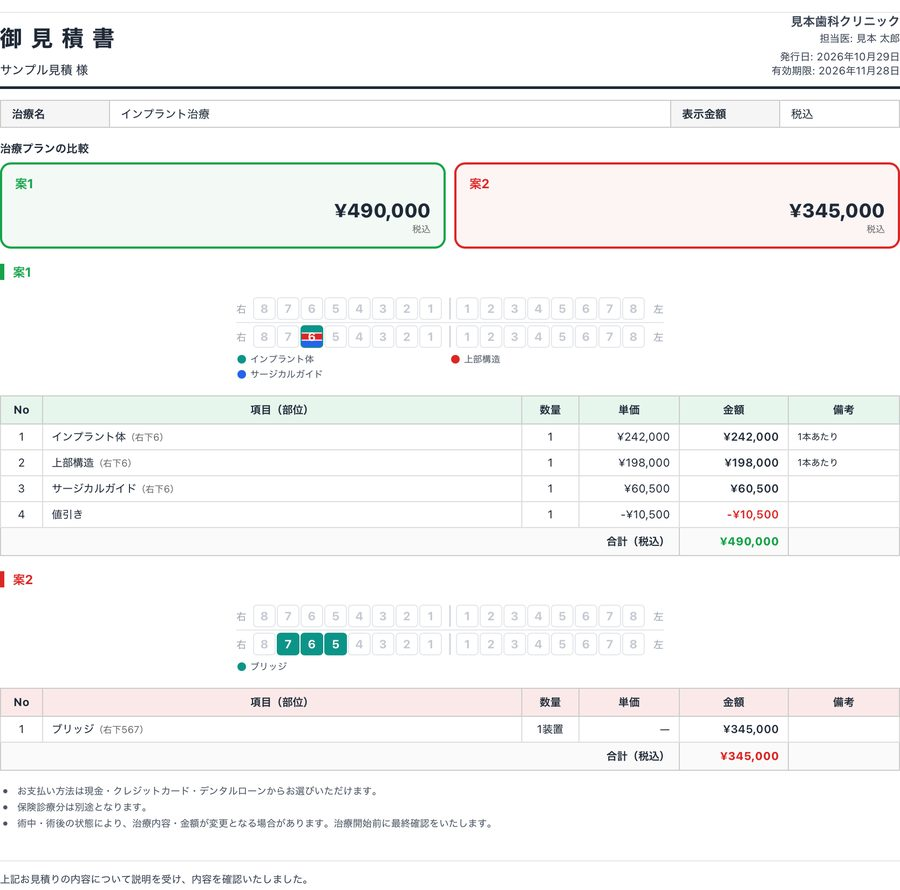
PDFを出力・共有 を押すと共有メニューが開き、プリント・ファイルへの保存・AirDrop などを選べます。保存した見積書は、見積書の画面の一覧から開き直せます。
STEP 9見積承諾書に署名してもらう（成約の記録）
患者さんが選んだ案で承諾書を作り、iPad で署名してもらいます。署名すると、その見積書が「成約」として記録されます。
- 見積書の画面の一覧から、保存した見積書を開きます。
- 画面の下のほう、見積書を更新 の上にあるオレンジの 🖊️ この見積で承諾書を作る を押します。このボタンは、一度保存した見積書にだけ出ます。
- 「自費診療 見積承諾書」が開くので、選択した案（患者さんが選んだ案）を押します。
- 説明者の氏名を入れます。必要なら特記事項を、患者さんが未成年なら保護者の続柄を入れます。
- 🔍 本文をプレビュー で、患者さんと一緒に内容を確かめます。
- ✍️ 署名する（電子サイン） を押し、iPad を患者さんに渡して署名してもらいます。書き損じたら右上の 書き直す を押します。
- 署名を確定 を押します。「署名を保存しました」と出て、この見積書が「成約」として記録されます。
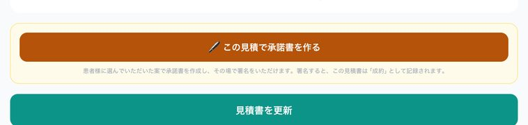
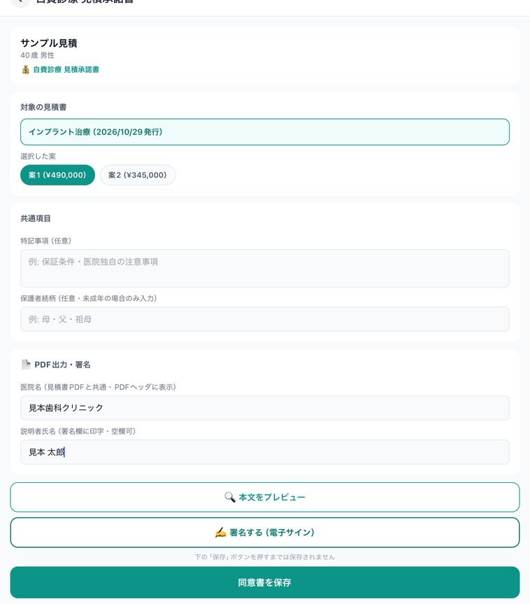
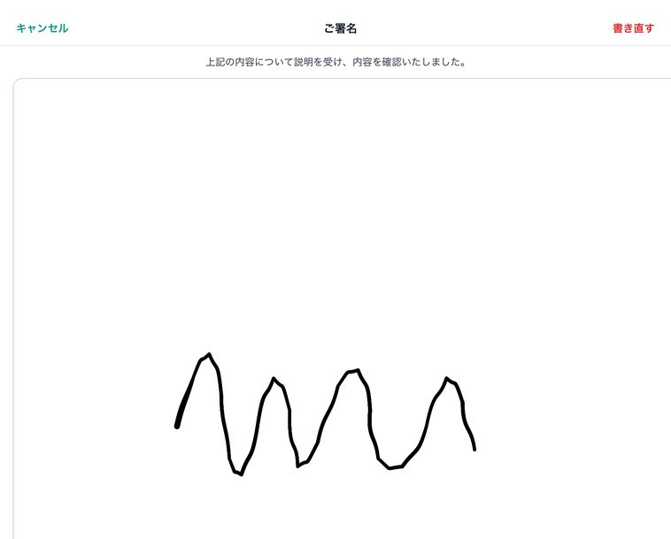
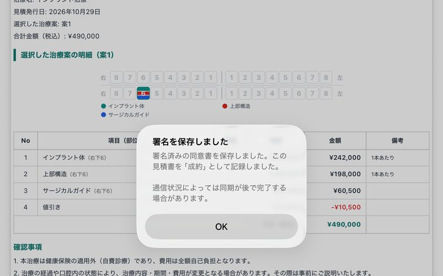
すでに「成約」になっている見積書で、別の案の承諾書に署名しても、成約の案は変わりません。案が変わったときは、STEP 10 の「見積もりの状況」で記録を直してください。
署名済みの承諾書は、右上の PDF共有 から印刷や保存ができます。署名したあとで承諾書を直して保存すると、署名は無効になり、それまでの署名済みの PDF は削除されます。署名をもらい直すことになるので、署名済みの PDF を残したいときは、直す前に「PDF共有」から保存してください。
同意書・承諾書の作成と電子サインは、有料プランの本契約後に使えます（無料トライアル中は使えません）。
見積承諾書のほかに、抜歯・インプラント・矯正などの同意書のひな形も入っています。ホームの「同意書・承諾書」から作れます。
STEP 10見積もりの状況と実績を見る
出した見積もりが、そのあとどうなったかを追えます。
- ホームの 見積もりの状況 を押します。結果がまだ決まっていない見積もりが「未確定」として並び、出してから何日たったかも出ます。
- 患者さんから返事が来たら、成約・検討中・見送り のどれかを押します。案が2つ以上ある見積書で成約を押すと、どの案かを聞かれます。
- 承諾書に署名をもらった見積もりは、STEP 9 で自動で成約になっているので、押さなくて大丈夫です。
- ホームの 実績 を押すと、成約率と金額が出ます。上のタブで 今月・先月・今年・全期間 を切り替えます。
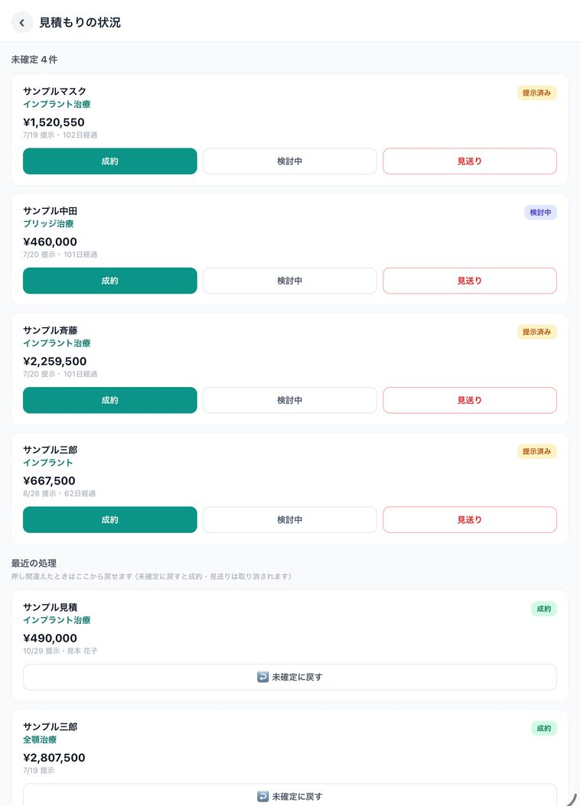
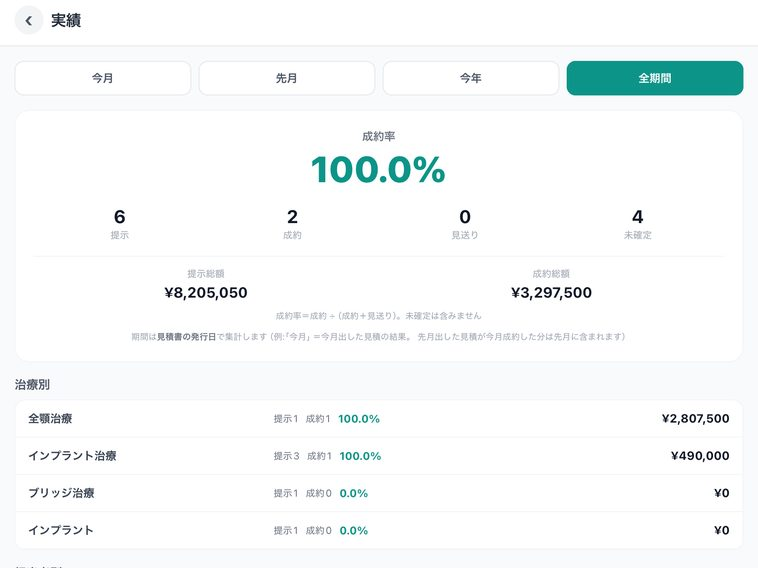
成約率は「成約 ÷（成約＋見送り）」で、未確定は入れずに計算します。期間は見積書の発行日で数えるので、先月出した見積もりが今月成約した分は「先月」に入ります。
間違えて成約や見送りを押したときは、「見積もりの状況」の下の「最近の処理」から ↩ 未確定に戻す を押します。「最近の処理」には、直近の10件が出ます。
よくある質問
無料でどこまで使えますか？
見積書は3件まで、期限なく無料で作れます。無料トライアル中と有料プランの契約中は、件数の上限なく作れます。同意書・承諾書の作成と電子サインは、書類として保存される性質上、有料プランの本契約後にご利用いただけます（無料トライアル中は対象外です）。
料金マスタの金額を変えると、作った見積書の金額も変わりますか？
変わりません。見積書の明細には、作った時点の金額が入ります。料金マスタの金額を変えたり、項目を隠したり削除したりしても、保存済みの見積書はそのままです。
見積書そのものにも署名をもらえますか？
もらえます。見積書の画面の「署名する（電子サイン）」から署名すると、署名入りの見積書の PDF になります。ただし「成約」の記録になるのは、見積承諾書に署名したときです。見積書への署名だけでは成約になりません。
成約を間違えて記録しました。取り消せますか？
取り消せます。「見積もりの状況」の下の「最近の処理」から、その見積書の「未確定に戻す」を押してください。成約・見送りの記録が外れて、未確定の一覧に戻ります。「最近の処理」に出るのは、直近の10件です。
署名したあとで承諾書を直せますか？
直せますが、保存すると署名は無効になり、もう一度署名が必要になります。そのとき、それまでの署名済みの PDF は削除されます。残したいときは、直す前に「PDF共有」から印刷するかファイルに保存してください。成約の記録はそのまま残るので、選ぶ案が変わるときは「見積もりの状況」で直してください。
見積書と同意書に何を書くか、説明の流れや保管の考え方は、歯科の自費診療の見積書・同意書の作り方で整理しています。
歯科サブカルテ&コンサルくん
「歯科サブカルテ&コンサルくん」は、歯科医院向けのサブカルテアプリです。手書きのカルテメモ、治療計画と診療記録、自費の見積書・同意書と電子サイン、成約の管理までを iPad 1台で扱えます。見積書は3件まで、期限なく無料で作れます。有料プランは月額 ¥4,980・年額 ¥49,800 です。
※ 歯科医院の業務支援を目的としたツールで、医療機器ではありません。見積金額・治療内容・同意書の記載内容は、利用される歯科医院の責任でご確認ください。アプリの記録は院内の補助的な記録であり、診療録（カルテ）に代わるものではありません。画面は 2026年10月時点の iPad 版です。
歯科サブカルテ&コンサルくんの詳細を見る